Chapter 1 Using the Template
1.1 Create a New Book on GitHub using the Template
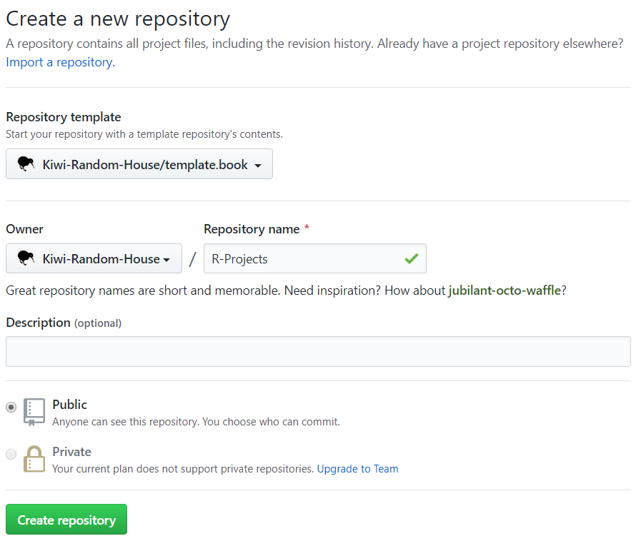
1.2 Link the Book with Travis
- Go to travis-ci.org (not travis-ci.com);
- Authorise Travis access to the book’s GitHub repo; and
- Toggle legacy service integration for the book’s GitHub repo.
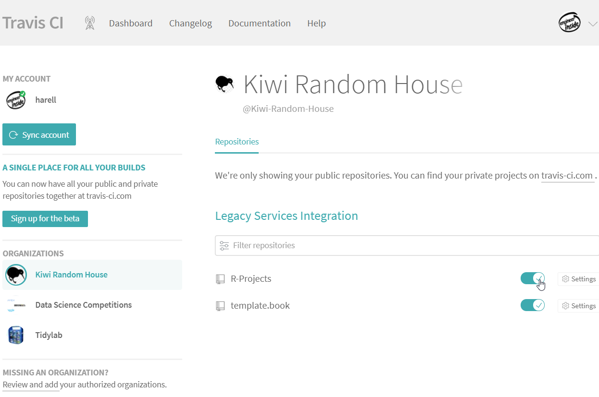
1.3 Add GitHub API to Travis
- Generate GitHub Personal Access Token (PAT) by either:
- Following the instructions provided on GitHub Help pages; or
- Running the command
usethis::browse_github_token().
- Add PAT as an environment variable named
GITHUB_PATwithin project setting.
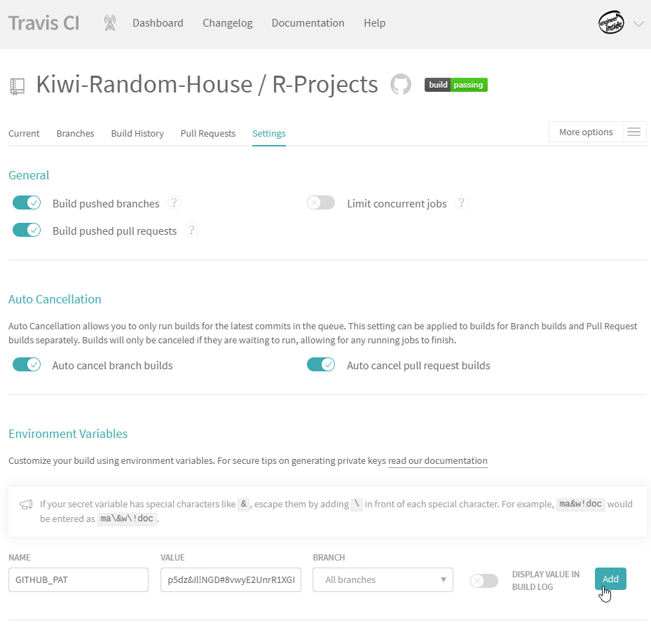
1.4 Set SSH key pair via travis
Only needed when deploying from builds on Travis CI or GitHub Actions.
1.5 Trigger Travis to Deploy the Book
Trigger the first deployment on the master and develop branches. You can do it either:
- Directly from GitHub by pushing changes into a new branch call develop; or
- Through SourceTree by:
- Cloning the repo to local computer through SourceTree;
- Initiating Git-flow; and
- Starting a new release named book-inception.
At this stage of using the template, there are several items we can update:
- Rename
template.book.Rprojto<book-name>.Rproj; and - Update the Title, Description and Date fields in DESCRIPTION.
Finally commit the changes:
- If you use GitHub website, then push the changes to the develop branch and merge the master branch.
- If you use SourceTree, then finish the release and push changes to remote.
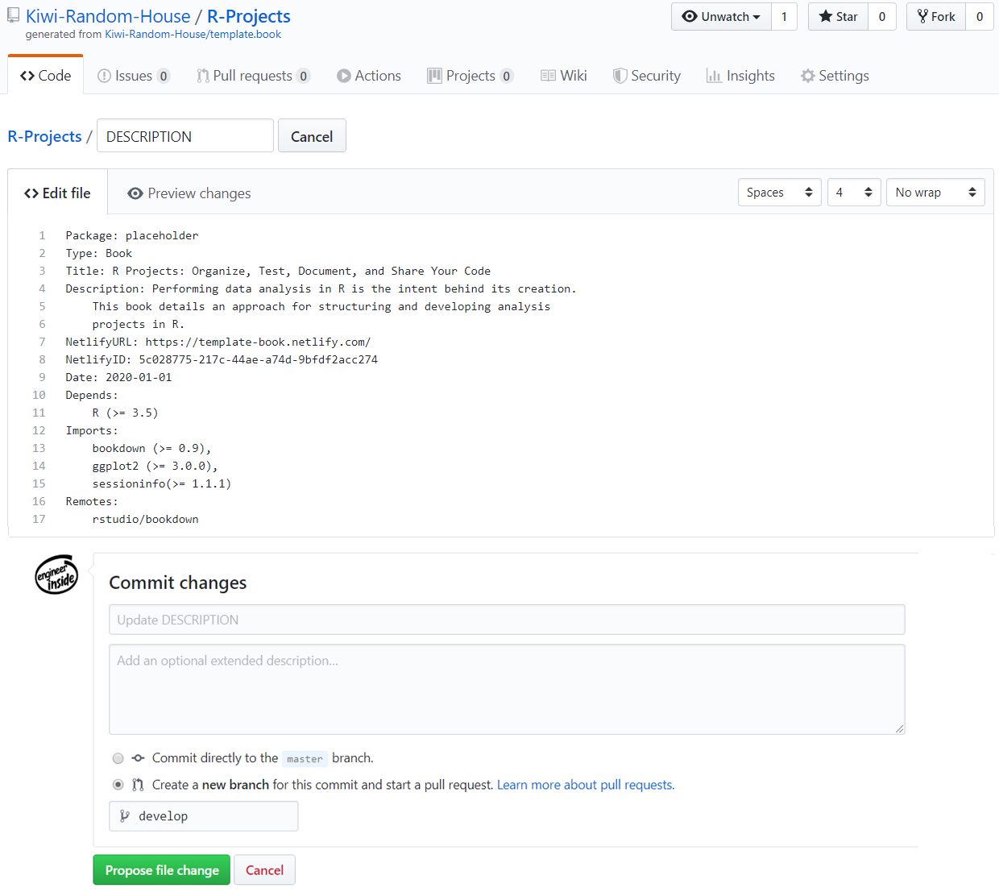
The first deployment takes ~9 minutes to complete. At the end of a successful run, two new branches appear in the GitHub repo: gh-pages and gh-preview.
1.6 Link the Book with Netlify
- Go to https://app.netlify.com/; and
- Follow the illustrations.
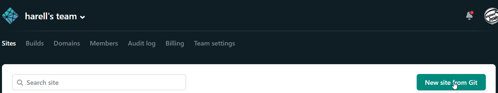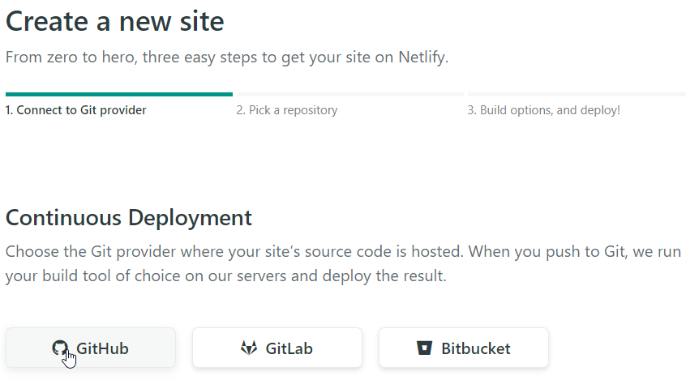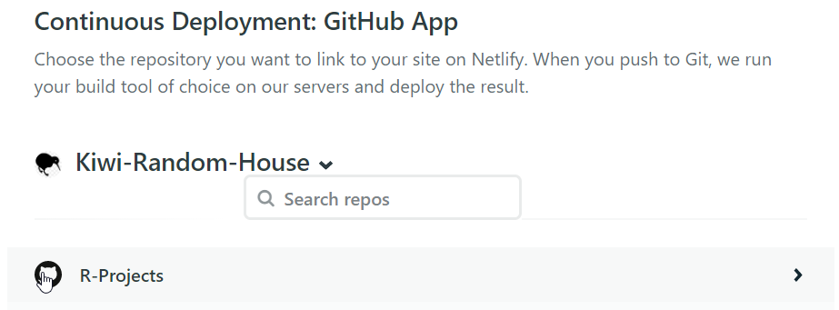
Modify the following by clicking on “Build settings” at the right navigation bar. Then, click “Edit settings” under “Deploy contexts”:
- Set “Production branch” to gh-pages;
- Set “Branch deploys” to “Let me add individual branches”; and
- Add gh-preview under “Additional branches”.
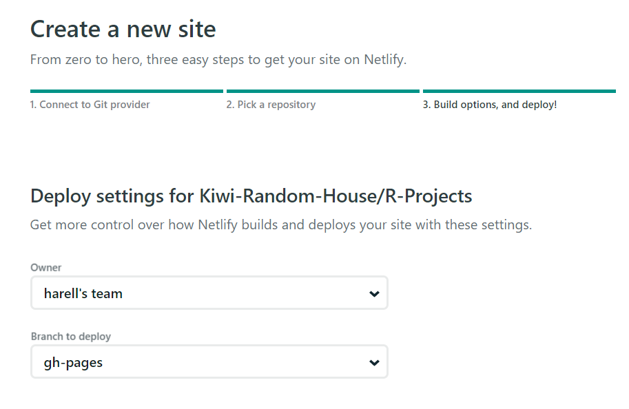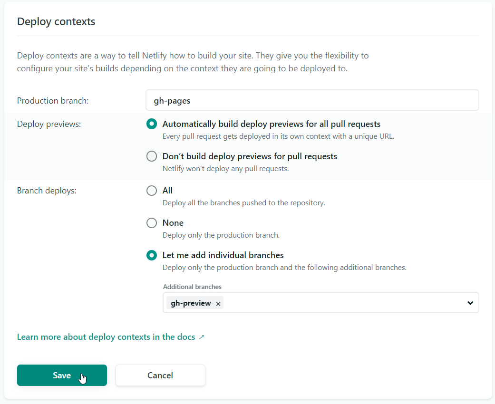
1.7 Update Site Name on Netlify
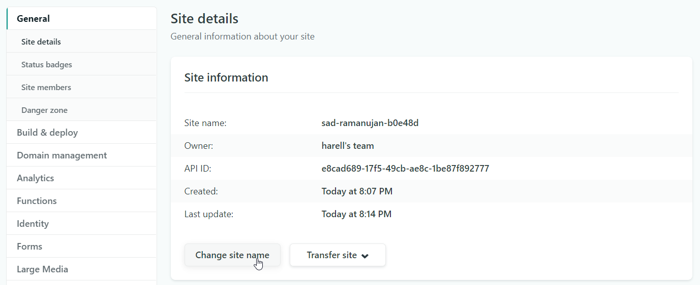
1.8 Update Netlify Fields within DESCRIPTION
- Update NetlifyURL with the site URL; and
- Update NetlifyID with API ID.
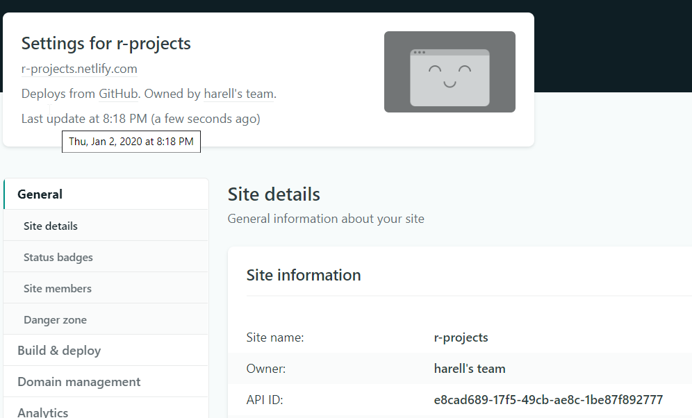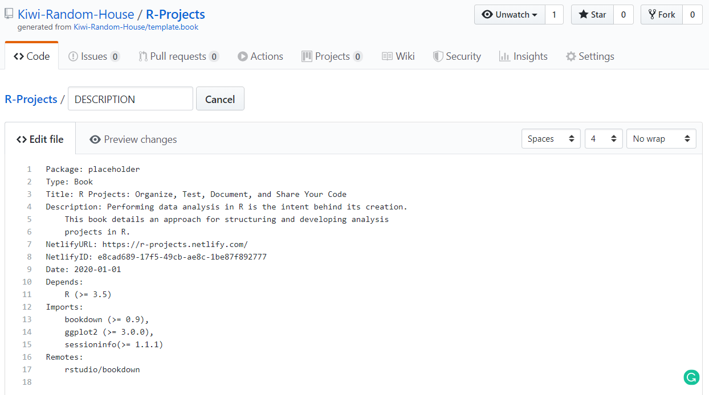
1.9 Update GitHub README File
- Render README.Rmd in R
- Push changes
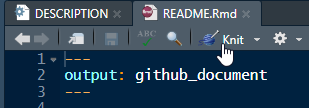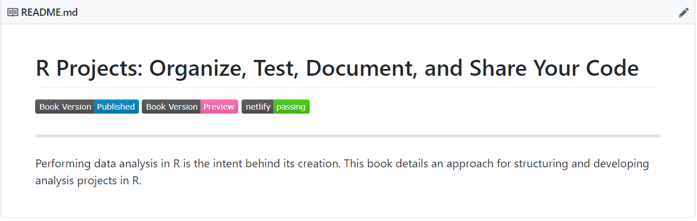
Congratulations, you’ve made it!